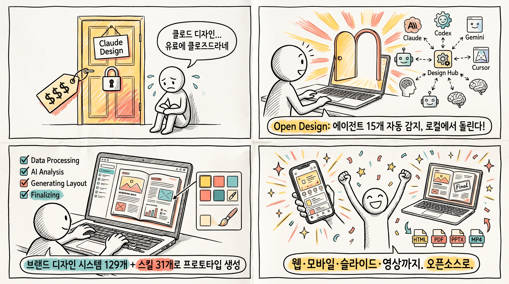
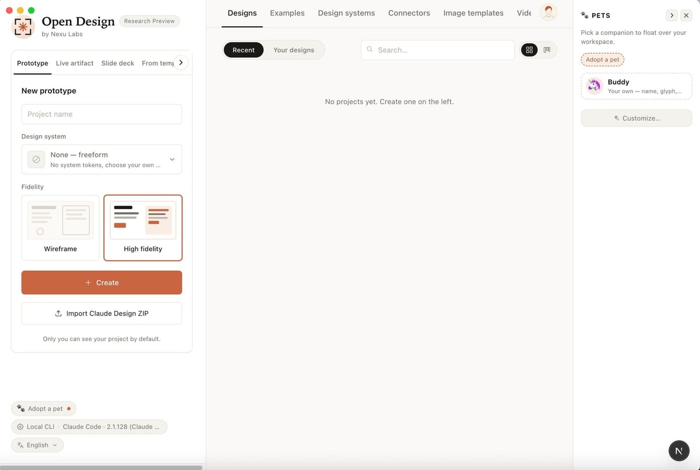
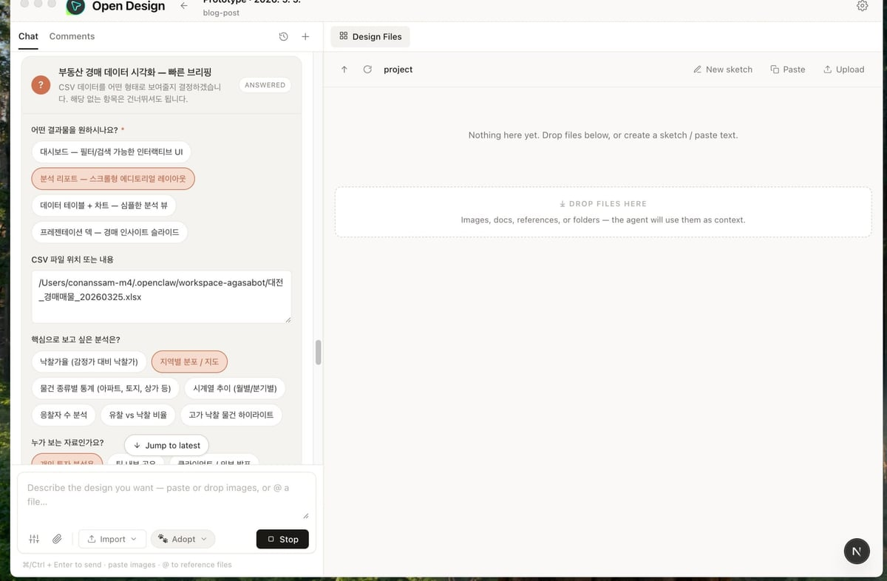
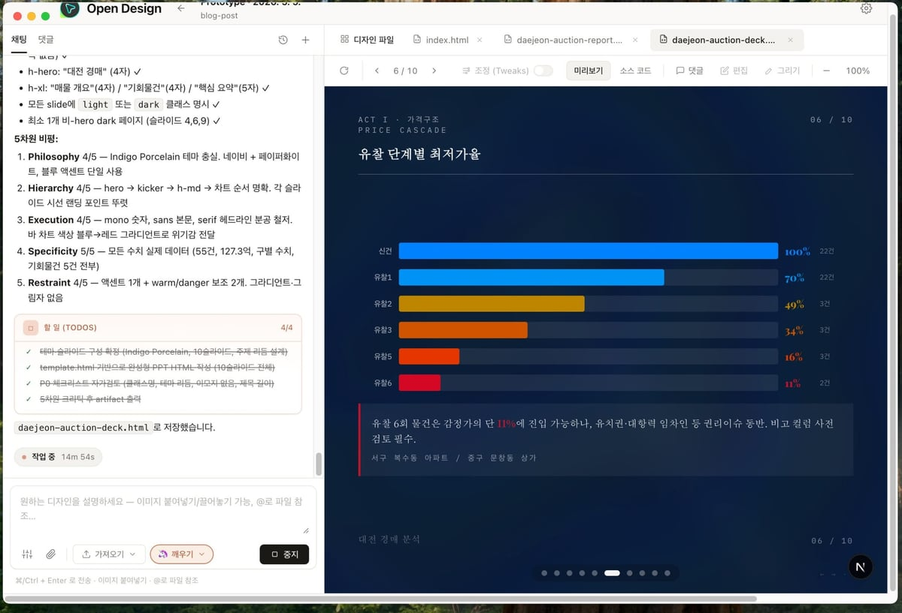
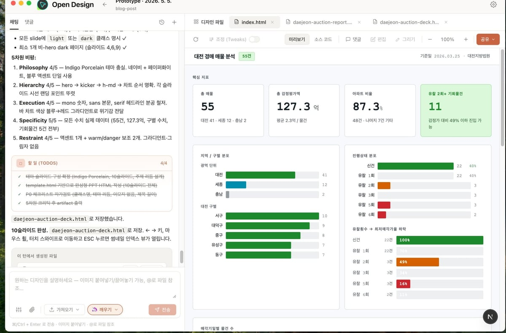
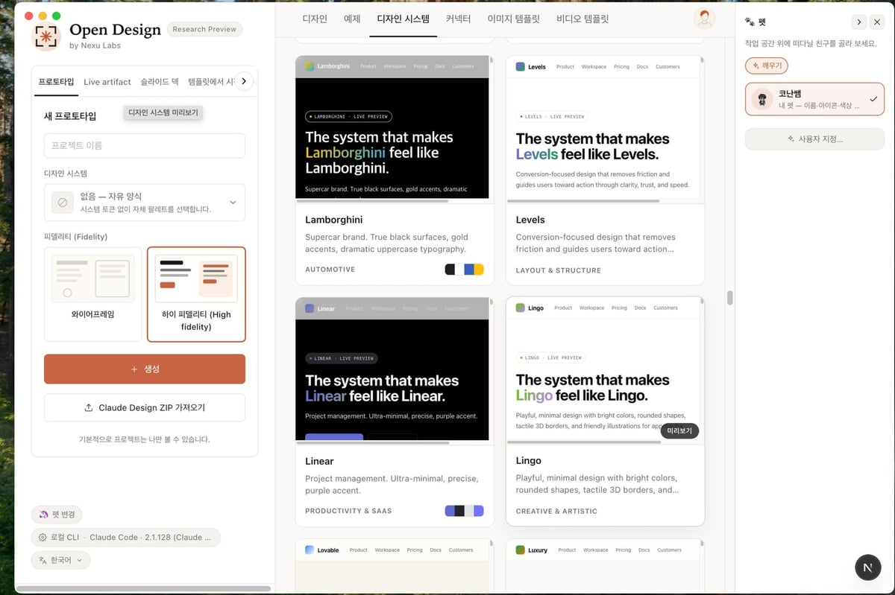

Claude Design이 보여준 것, 그리고 놓친 것
2026년 4월 17일, Anthropic이 Claude Design을 발표했다. Opus 4.7 기반. LLM이 산문을 쓰지 않고 디자인 산출물을 직접 뱉어내는 순간이었다. 바이럴이 됐다. 그리고 여전히 클로즈드 소스, 유료 전용, 클라우드 전용이다.
직접 설치할 수 없다. 셀프 호스트가 안 된다. Vercel에 배포할 수 없다. 다른 모델이나 에이전트를 끼워 넣을 수 없다. Anthropic의 모델, Anthropic의 스킬, Anthropic의 가격.
그 대안이 나왔다. **Open Design**이다.
Open Design이 뭔가
한 줄로: 로컬에서 돌아가는 오픈소스 AI 디자인 툴. 코딩 에이전트를 디자인 엔진으로 쓴다.
차이점은 이거다:
| Claude Design | Open Design | |
|---|---|---|
| 소스 | 클로즈드 | 오픈소스 (Apache 2.0) |
| 실행 환경 | 클라우드 전용 | 로컬 first, Vercel 배포 가능 |
| 에이전트 | Claude만 | 15개 CLI 자동 감지 |
| 디자인 시스템 | 자체 | 129개 내장 |
| 스킬 | 자체 | 31개 |
| BYOK | 불가 | 모든 레이어 가능 |
| Claude Design 마이그레이션 | — | ZIP 임포트 지원 |
“우리가 에이전트를 만들지 않는다”는 게 핵심이다. 이미 노트북에 설치된 가장 강력한 코딩 에이전트를 디자인 엔진으로 끌어다 쓴다.
어떤 에이전트를 지원하나
시작할 때 PATH를 스캔해서 자동으로 감지한다:
- Claude Code — Anthropic
- Codex CLI — OpenAI
- Devin for Terminal — Cognition
- Cursor Agent — Cursor
- Gemini CLI — Google
- OpenCode — 오픈소스
- Qwen Code — Alibaba
- GitHub Copilot CLI — Microsoft
- Hermes (ACP) — 에이전트 프로토콜
- Kimi CLI (ACP)
- Pi (RPC)
- Kiro CLI (ACP) — Amazon
- Kilo (ACP)
- Mistral Vibe CLI (ACP)
- DeepSeek TUI
CLI가 하나도 없어도 괜찮다. OpenAI 호환 BYOK 프록시 모드가 있다. baseUrl + apiKey + 모델만 넣으면 같은 파이프라인이 돈다.
129개 디자인 시스템이 뭔가
Open Design은 “AI가 알아서 예쁘게 만들겠지”에 기대지 않는다. 결정론적 팔레트와 폰트 스택을 제공한다.
2개 직접 작성 스타터 + 70개 프로덕트 시스템 + 57개 디자인 스킬
프로덕트 시스템 예시: Linear, Stripe, Vercel, Airbnb, Tesla, Notion, Anthropic, Apple, Cursor, Supabase, Figma, Xiaohongshu 등. 브랜드별 4컬러 시그니처와 DESIGN.md가 있어서, 에이전트가 브랜드 가이드를 읽고 그에 맞게 디자인한다.
시각 방향도 5가지 큐레이션을 제공한다:
- Editorial Monocle — 잡지 에디토리얼
- Modern Minimal — 모던 미니멀
- Warm Soft — 따뜻한 소프트
- Tech Utility — 테크 유틸리티
- Brutalist Experimental — 브루탈리스트 실험
각 방향은 결정론적 OKLch 팔레트 + 폰트 스택이 정해져 있다. 모델이 마음대로 프리스타일하지 않는다.
31개 스킬이 뭘 만드나
프로토타입 모드 (27개)
| 스킬 | 플랫폼 | 산출물 |
|---|---|---|
web-prototype | 데스크톱 | 랜딩 페이지, 히어로 페이지 |
saas-landing | 데스크톱 | 마케팅 레이아웃 |
dashboard | 데스크톱 | 어드민/애널리틱스 대시보드 |
mobile-app | 모바일 | iPhone 15 Pro / Pixel 프레임 앱 화면 |
mobile-onboarding | 모바일 | 온보딩 플로우 (스플래시·밸류프랍·로그인) |
gamified-app | 모바일 | 게이미파이드 앱 프로토타입 |
social-carousel | 데스크톱 | 1080×1080 소셜 카드셀 3장 |
magazine-poster | 데스크톱 | 매거진 스타일 포스터 |
email-marketing | 데스크톱 | HTML 이메일 (테이블 폴백) |
dating-web | 데스크톱 | 데이팅 대시보드 목업 |
wireframe-sketch | 데스크톱 | 손그림 와이어프레임 |
critique | 데스크톱 | 5차원 자기 비평 스코어시트 |
tweaks | 데스크톱 | AI가 조정할 파라미터 추천 |
motion-frames | 데스크톱 | CSS 애니메이션 모션 히어로 |
sprite-animation | 데스크톱 | 픽셀/8비트 애니메이션 슬라이드 |
docs-page | 데스크톱 | 3단 문서 레이아웃 |
blog-post | 데스크톱 | 에디토리얼 롱폼 |
pricing-page | 데스크톱 | 가격 비교 테이블 |
pm-spec | 제품 | PM 스펙 문서 |
team-okrs | 제품 | OKR 스코어시트 |
eng-runbook | 엔지니어링 | 인시던트 런북 |
finance-report | 재무 | 재무 요약 리포트 |
invoice | 재무 | 인보이스 |
hr-onboarding | HR | 온보딩 플랜 |
kanban-board | 운영 | 칸반 보드 스냅샷 |
meeting-notes | 운영 | 회의 결정 로그 |
digital-eguide | 마케팅 | 디지털 e-가이드 (표지 + 레슨) |
데크 모드 (4개)
| 스킬 | 산출물 |
|---|---|
guizang-ppt | 매거진 스타일 웹 PPT (WebGL 히어로) |
simple-deck | 미니멀 가로 스와이프 데크 |
replit-deck | 제품 워크스루 데크 |
weekly-update | 팀 위클리 캐던스 데크 |
Q: 실제로 어떻게 돌아가나?
make me a magazine-style pitch deck for our seed round라고 입력한다고 치자.
- 인터랙티브 질문 폼이 먼저 뜬다. 서피스, 타겟, 톤, 브랜드 컨텍스트를 고른다. 모델이 픽셀 하나 그리기 전에 브리프가 고정된다
- 비주얼 방향 선택이 나온다. 5가지 큐레이션 방향 중 하나를 고르면 결정론적 팔레트 + 폰트 스택이 세팅된다
- 실시간 TodoWrite 플랜이 UI에 스트리밍된다.
in_progress→completed가 실시간 업데이트된다. 중간에 방향을 바꿀 수 있다 - 데몬이 실제 프로젝트 폴더를 만든다. 시드 템플릿, 레이아웃 라이브러리, 셀프체크 체크리스트 포함
- 에이전트가 프리플라이트를 읽고 5차원 자기 비평을 돌린다
- **단일
<artifact>**로 샌드박스 iframe에 렌더링된다
이건 “AI가 디자인을 시도한다”가 아니다. 프롬프트 스택으로 훈련된 AI가 파일시스템, 결정론적 팔레트, 체크리스트 문화를 가진 시니어 디자이너처럼 행동하는 것이다.
Q: 미디어도 생성되나?
된다. 코드와 같은 채팅 서피스에서 돌아간다:
- gpt-image-2 (Azure/OpenAI) — 포스터, 아바타, 인포그래픽
- Seedance 2.0 (ByteDance) — 15초 시네마틱 텍스트→비디오
- HyperFrames (HeyGen) — HTML→MP4 모션 그래픽 (제품 공개, 키네틱 타이포, 데이터 차트)
93개 레디-투-리플리케이트 프롬프트 갤러리가 내장되어 있다. gpt-image-2용 43개, Seedance용 39개, HyperFrames용 11개. 결과물은 .mp4 / .png 칩으로 프로젝트 워크스페이스에 바로 떨어진다.
Q: Claude Design에서 갈아타나?
가능하다. Claude Design export ZIP을 웰컴 다이얼로그에 드롭하면 POST /api/import/claude-design이 프로젝트로 파싱한다. Open Design 에이전트가 Anthropic이 멈춘 곳에서 이어서 편집한다.
누가 만들었나
nexu-io 조직에서 만들었다. 같은 조직에서 OpenClaw 데스크톱 클라이언트인 Nexu도 개발 중이다.
네 개 오픈소스 프로젝트 위에 서 있다:
- huashu-design — 디자인 철학 나침반 (5단계 브랜드 에셋 프로토콜, anti-AI-slop 체크리스트)
- guizang-ppt-skill — 매거진 스타일 데크 모드
- open-codesign — UX 노스스타, 샌드박스 iframe 패턴
- multica — 데몬+런타임 아키텍처, PATH 스캔 에이전트 감지
Q: 직접 돌려볼 수 있나?
된다. 3개 커맨드면 된다:
git clone https://github.com/nexu-io/open-design.git
cd open-design
pnpm tools-dev start데몬이 PATH를 스캔해서 설치된 에이전트를 자동으로 찾고, 웹 UI가 뜬다. 스킬 고르고, 디자인 시스템 고르고, 브리프를 입력하면 바로 시작된다.
왜 주목해야 하나
Claude Design이 증명한 건 “LLM이 디자인 산출물을 만들 수 있다”였다. Open Design이 보여주는 건 **“그걸 오픈소스로, 로컬에서, 내가 선택한 에이전트로, 내가 선택한 모델로 할 수 있다”**다.
핵심은 이거다: AI 디자인 도구의 경쟁이 “어떤 모델이 더 예쁘게 만드나”가 아니라 “얼마나 열려 있고, 얼마나 많은 에이전트를 활용하고, 얼마나 확장 가능한가”로 바뀌고 있다. Open Design은 그 전환점에 서 있다.
OpenClaw로 업무 자동화를 하고 싶다면 **《이게 되네? 오픈클로 미친 활용법 50제》**를 참고해보자.
《이게 되네? 오픈클로 미친 활용법 50제》 — Yes24에서 구매하기
실제 활용 사례: 대전경매 분석 대시보드
Open Design으로 만든 대시보드가 실제로는 어떻게 보일까?
시나리오: 부동산 경매 데이터 수집 → 정제 → 분석이 끝나고, 이제 누구나 이해할 수 있는 대시보드를 만들어야 한다.
1단계: 브리프 작성

“대전시 부동산 경매 현황을 한눈에 보는 대시보드. 유찰 추이, 지역별 통계, 가격대별 인기도까지.”
Web Prototype 스킬을 선택하고, dashboard 빌드 타입을 고른다.
2단계: AI 에이전트가 데이터 시각화 구상

에이전트가 대시보드 구조를 제안한다:
- 유찰 단계별 최저가율 라인 차트
- 지역별 경매품 개수 바 차트
- 가격대별 누적 낙찰 비율
- 실시간 필터링 UI
사용자는 “가격대별 그룹핑 추가”, “서구만 강조” 같은 요청을 실시간으로 할 수 있다.
3단계: 생성된 대시보드

결과물:
- 1차 유찰: 최저가율 100% (그냥 시작가)
- 2차: 70% (낙찰자들이 조금 더 낸다)
- 3차: 49% (유찰이 반복되면서 대폭 낮아짐)
- 6차: 11% (거의 헐값)
대전시 부동산은 유찰 단계가 올라갈수록 낙찰가가 80% 이상 떨어진다는 인사이트가 한눈에 드러난다.

지역별로는:
- 동구: 55건 (가장 많음)
- 서구: 12건 (상대적으로 적음)
- 낙찰률: 동구가 유리한 지역임을 색상으로 표현
이 대시보드는 부동산 중개인뿐 아니라, PM, 경영진, 외부 투자자도 “말 없이 보기만 해도” 대전 경매 시장을 이해한다.
4단계: 디자인 시스템으로 일관성 유지

이 대시보드가 회사 브랜드에 안 맞으면 어떻게 할까?
Linear 시스템으로 만들었는데 Stripe 톤으로 바꾸고 싶다면? 한 줄이면 된다.
/select-design-system stripe
에이전트가 팔레트와 폰트를 바꾸고, 컴포넌트를 다시 렌더링한다. 차트 색상, 버튼 스타일, 타이포그래피가 모두 일관되게 변한다.
핵심
데이터가 있어도 시각화가 없으면 아무도 안 본다. Open Design은 “기술팀이 만든 대시보드를 디자인팀이 손 댈 필요가 없게” 한다. 대신 에이전트가 데이터 + 브랜드 가이드 + 디자인 시스템으로 일관되고 예쁜 UI를 자동 생성한다.
관련 링크